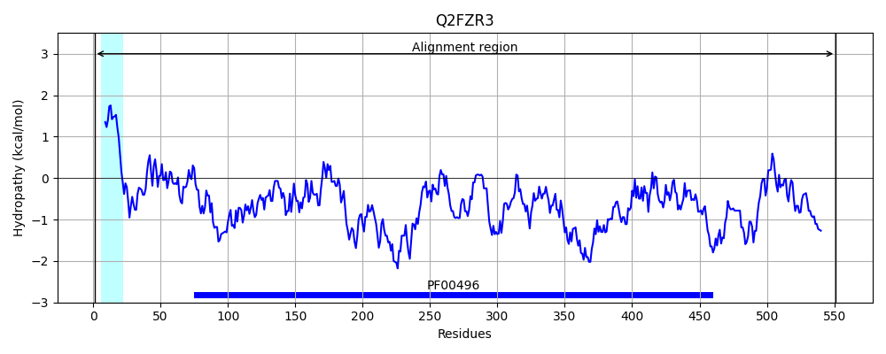

Hit Accession: Q2FZR3
Hit TCID: 3.A.1.5.19
Hit Description: gnl|BL_ORD_ID|13234 gnl|TC-DB|Q2FZR3|3.A.1.5.19 Oligopeptide ABC transporter, substrate-binding protein, putative - Staphylococcus aureus (strain NCTC 8325).
Mach Len: 551
e:0.000000
Query TMS Count : 1
Hit TMS Count: 1
TMS-Overlap Score: 0.850000
Predicted Substrates:CHEBI:7755;oligopeptide
BLAST Alignment:
Score: 2853 , Bit scores: 1103 bits, E-value: 0.0e+00, Alignment length: 551, Percentage identity: 100
Query: 1 MTRKFRTLILILIATIALSGCANDDGIYSDKGQVFRKILSSDLTSLDTSLITDEISSEVTAQTFEGLYTLGKGDKPVLGVAKAFPEKSKDGKTLKVKLRSDAKWSNGDKVTAQDFVYAWRKTVDPKTGSEFAYIMGDIKNASDISTGKKPVEQLGIKALNDETLQIELEKPVPYINQLLALNTFAPQNEKVAKKYGKNYGTAADRAVYNGPFKVDDWKQEDKTLLSKNQYYWDKKNVKLDKVNYKVIKDLQAGASLYDTESVDDAVITADQVNKYKDNKGLNFVLTTGTFFVKMNEKQYPDFKNKNLRLAIAQAIDKKGYVDSVKNNGSIPSDTLTAKGIAKAPNGKDYASTMNSPLKYNPKEARAHWDKAKKELGKNEVTFSMNTEDTPDAKISAEYIKSQVEKNLPGVTLKIKQLPFKQRVSLELSNNFEASLSGWSADYPDPMAYLETMTTGSAQNNTDWGNKEYDQLLKVARTKLALQPNERYENLKKAEEMFLGDAPVAPIYQKGVAHLTNPQVKGLIYHKFGPNNSLKHVYIDKSIDKETGKKKK 551
MTRKFRTLILILIATIALSGCANDDGIYSDKGQVFRKILSSDLTSLDTSLITDEISSEVTAQTFEGLYTLGKGDKPVLGVAKAFPEKSKDGKTLKVKLRSDAKWSNGDKVTAQDFVYAWRKTVDPKTGSEFAYIMGDIKNASDISTGKKPVEQLGIKALNDETLQIELEKPVPYINQLLALNTFAPQNEKVAKKYGKNYGTAADRAVYNGPFKVDDWKQEDKTLLSKNQYYWDKKNVKLDKVNYKVIKDLQAGASLYDTESVDDAVITADQVNKYKDNKGLNFVLTTGTFFVKMNEKQYPDFKNKNLRLAIAQAIDKKGYVDSVKNNGSIPSDTLTAKGIAKAPNGKDYASTMNSPLKYNPKEARAHWDKAKKELGKNEVTFSMNTEDTPDAKISAEYIKSQVEKNLPGVTLKIKQLPFKQRVSLELSNNFEASLSGWSADYPDPMAYLETMTTGSAQNNTDWGNKEYDQLLKVARTKLALQPNERYENLKKAEEMFLGDAPVAPIYQKGVAHLTNPQVKGLIYHKFGPNNSLKHVYIDKSIDKETGKKKK
Sbjct: 1 MTRKFRTLILILIATIALSGCANDDGIYSDKGQVFRKILSSDLTSLDTSLITDEISSEVTAQTFEGLYTLGKGDKPVLGVAKAFPEKSKDGKTLKVKLRSDAKWSNGDKVTAQDFVYAWRKTVDPKTGSEFAYIMGDIKNASDISTGKKPVEQLGIKALNDETLQIELEKPVPYINQLLALNTFAPQNEKVAKKYGKNYGTAADRAVYNGPFKVDDWKQEDKTLLSKNQYYWDKKNVKLDKVNYKVIKDLQAGASLYDTESVDDAVITADQVNKYKDNKGLNFVLTTGTFFVKMNEKQYPDFKNKNLRLAIAQAIDKKGYVDSVKNNGSIPSDTLTAKGIAKAPNGKDYASTMNSPLKYNPKEARAHWDKAKKELGKNEVTFSMNTEDTPDAKISAEYIKSQVEKNLPGVTLKIKQLPFKQRVSLELSNNFEASLSGWSADYPDPMAYLETMTTGSAQNNTDWGNKEYDQLLKVARTKLALQPNERYENLKKAEEMFLGDAPVAPIYQKGVAHLTNPQVKGLIYHKFGPNNSLKHVYIDKSIDKETGKKKK 551 | Protein Hydropathy Plots: |
|---|
|  |
Pairwise Alignment-Hydropathy Plot:
|
|---|
|